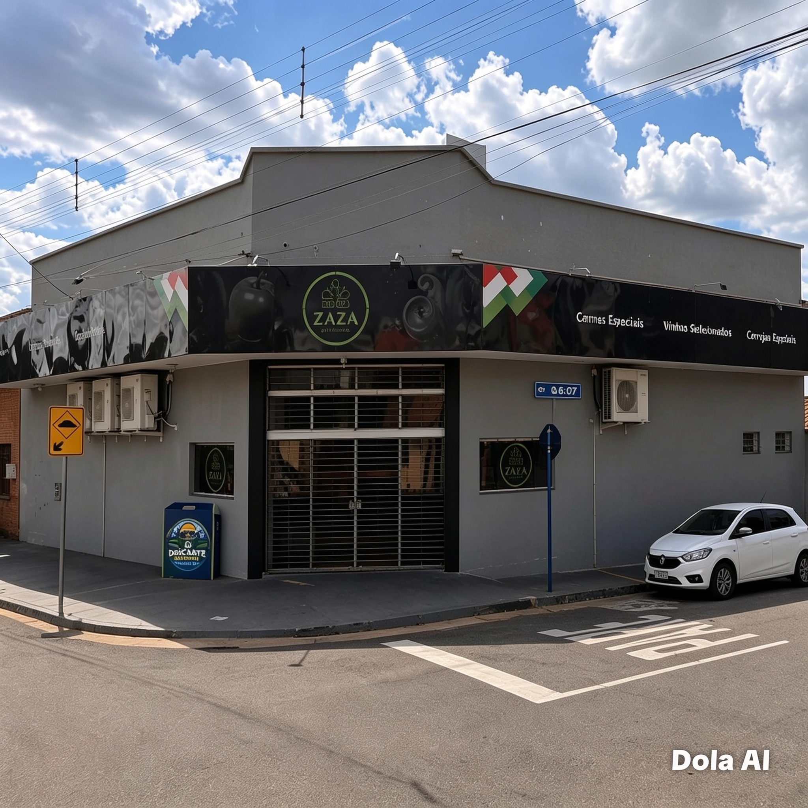

DESCARTE CONSCIENTE DE RESÍDUOS ELETRÔNICOS.
O descarte consciente de resíduos eletrônicos é uma prática fundamental para a preservação do meio ambiente e para a promoção da sustentabilidade. Com o aumento do consumo de equipamentos tecnológicos, como celulares, computadores, televisores, pilhas e baterias, cresce também a quantidade de lixo eletrônico gerado pela população. Quando descartados de forma inadequada, esses materiais podem liberar substâncias tóxicas que contaminam o solo, a água e causam riscos à saúde humana. Nesse contexto, torna-se essencial conscientizar a comunidade sobre a importância de utilizar pontos de coleta apropriados e adotar hábitos responsáveis de descarte. A criação de ferramentas digitais, como uma aplicação web para localização de pontos de coleta e divulgação de informações educativas, contribui para facilitar o acesso da população a orientações confiáveis, incentivando práticas sustentáveis e fortalecendo a responsabilidade ambiental no município de Tupi Paulista/SP.

PONTOS DE COLETA PARCEIROS.

SUPERMERCADOS
•Supermercado Avenida - Av. Nove de Julho, 1414;
•São João - Av. Nove de Julho, 706;
•Empório Zaza - Av. Brasil, 616

PREFEITURA
•Prefeitura Mun de Tupi Paulista- R. Júlio Cantadori, 405

ESCOLAS
•Escola Municipal Geny Barbosa Genovez - Av. Sen. Piza, 1194;
•E.E. Profa. Léa Aparecida Vieira Guedes - R. Tiradentes, 135.

PRAÇAS PÚBLICAS
•Praça Prefeiro DR. Iton da Costa Oliveira - R. Antonio Jose Gonçalves Fraga;
•Praça Rotary - Av. Nove de Julho;